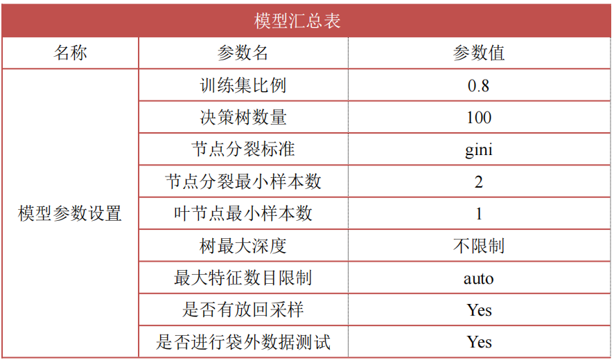

~~~~~ 调查背景 ~~~~~
戏曲评论家傅谨先生言，“传统和市场是重振京剧的两翼”，“市场是重建艺术与现实间联系的捷径”强调了市场对传承与保护京剧艺术的重要性；同时，文化艺术是一种特殊的精神消费品，喜爱和共鸣是激发消费偏好的动因。长期以来，京剧创作以历史题材为主，过度地恪守传统，时代元素的融入少，不能迎合青少年群体的巨大需求市场。因此，了解并根据青少年偏好对京剧以及其文创产品进 行创新是扩大京剧在青年一代影响力的钥匙。
基于此，我们决定调查当代大学的对京剧的认知和偏好，对京剧传承和发展提出切实可行的建议，助力京剧焕发青春新生。
调查对象为全国范围内的在校大学生，包含本科大一到大四以及研究生。其中，本调查依据大学生院校所在地区分为东北、华东、华北、华中、华南、西南和西北七大调查区。以在校大学生群体代表当代年轻人，调查研究年轻人对京剧的认知状态和偏好，促进京剧及其文化在年轻人中传播，推动京剧市场更好的发展。我们最终收集到有效问卷为 807 份。
基本信息
性别
根据问卷调查本次参与调查的女生较多占比61.09%，参与人数493，男生占比38.91%，参与人数314人，分析男女各自人数占总参与人数的比重，可知：本次调查的女生参与人数较多，可能存在性别带来的研究偏差。
年级
本次调查大一人数占比为12.14%，大二人数占比为28.50%，大三人数占比为36.93%，大四仁顺占比为16.73%，研究生约占5.70%，可知参与者大三最多，大二较多，大一、大四相对较少，研究生参与率最少。
专业
本次调查经管类人数占比为19.45%，文史类人数占比为23.79%，理工类人数占比为31.97%，农医类人数占比为8.30%，艺术与教育类约占12.89%，可知参与者理工类最多，文史类较多，其次为经管类和艺术与教育类，农医类参与率最少。
地区
本次调查华北地区人数占比为36.31%，为最多，华东地区人数占比为24.78%较多，华南地区人数占比为14.62%，西南、东北人数占比为6.94%和5.58%占比较少，西北地区参与率最少为1.73%。说明问卷主要反映华北地区、华东地区、华南地区学生相关情况。
月生活费
本次调查生活费在1500 元～3000 元人数为588，占比为72.86%，为最多，0～1000 元区间人数占比为14.00%较多，生活费3000～6000 元占比为11.65%，6000元以上占比为1.49%为最少。说明问卷主要反映生活费在1500 元～3000 元区间的学生相关情况。
认知现状
基本认知程度
当代大学生对京剧的五项认知程度均为正向态度。整体来看大学生对京剧都有基本的了解；大学生京剧的喜爱程度的平均分为 3.59，对京剧有一定好感；大学生对京剧艺术的发展和传承的关心程度的平均分 3.8，大学生一定程度上关心京剧的发展和传承；大学生对目前京剧发展的满意程度为3.58，较好但仍有较大的上升空间，说明目前京剧传承仍需进一步努力加强；大学生认为京剧应该得到传承的平均分为 4.28，说明绝大部分大学生认为京剧应该得到传承，说明京剧在大学生群体中依旧有举足轻重的地位。
影响京剧传承的因素认知
在影响我国大学生对于京剧传承的认知因素中，表演形式、演员功底和文化内涵是最为主要的因素，表明当下大学生持“打铁还需自身硬”的态度，认为京剧本身的特质对于其传承最为重要。其次是内容创新、社会氛围、性价比、政府支持力度，表明我国大学生认为虽然外在条件如是否吸引观众和外部支持等对于京剧的传承很重要，但是这些都只是辅助因素，不能成为京剧传承发展的根本性和决定性因素。与前面的因素相比，我国大学生认为京剧的观看场所对于京剧的传承影响最小。
接触途径与支持方式
接触途径
大学生通过文创产品（艺术品、国潮等）了解京剧的人数占比最多，为 48.82%。总体上，各种方式均有一定的比例，说明大学生了解京剧的途径多种多样，为京剧的传承与发展提供了更多可能和途径。
支持方式
大学生通过购买文创产品来支持京剧传承占比最高，表明大学生对京剧文创产品的市场需求较大，总体上，绝大多数大学生愿意通过多种渠道和方式支持京剧文化传承与发扬，为我们发展京剧提供了更多思路和可能。
福格行为模型与结构方程模型
~~~~~ 福格行为模型 ~~~~~
为深入探究当代大学生对京剧的实际接触情况与付费意愿，为京剧传承与发展提供思路，我们引入了研究人们行为动因机制常用的模型——福格行为模型。
该模型认为任何一个行为的发生，都需要同时满足三个要素——产生行为的动机、能够实施行为的能力，以及一个合适的触发条件。动机为人们做出特定行为提供了理由。动机可以是内在的，如成就感；也可以是外在的，如得到物质奖励。能力即完成某件事情所花费的时间、金钱和精力等，触发告诉人们去做某件事，通常称其为“行为号召”
~~~~~ 结构方程模型 ~~~~~
结构方程模型(SEM)是基于变量的协方差矩阵来分析变量之间关系的一种统计分析方法，主要用于处理多个原因、结果的复杂关系以及含有潜变量的问题。模型中既包含可观测的显在变量，也可能包含无法直接观测的潜在变量，可清晰分析单项指标对总体的作用和单项指标间的相互关系。该模型通过检验心理测量的信度、效度及解释测量中的一些问题，为检验观察数据与基本行为结构之间的关系提供了一种有效的方法。
福格行为模型的基础公式是：B=MAT，其中 B 代表行为，M 代表动机，A 代表能力，T代表触发器，行为 B 的产生，来自 M、A 和 T 的共同作用。
福格行为模型----描述性分析
触发层面
大学生接触京剧及其相关的宣传情况一般，京剧宣传力度还有提高的空间。
动机层面
大学生普遍认同京剧的发展与传承非常重要。
能力层面
在时间方面，当代大学生有一定时间参与京剧及其相关活动情况；费用方面，大学生能承担参与京剧及其相关活动费用的情况良好。精力方面，大学生有一定精力参与到京剧及其相关的活动中。总体上，大学生有一定能力参与到京剧及其相关活动中。
行为层面
首先，当代大学生非常乐意接触京剧；第二，观看京剧的意愿情况良好；第三，大学生对京剧的付费意愿良好，“比较同意”和“完全同意”的占比分别为43.81%和20.17%，但程度“不清楚”的也有19.18%，说明还有提升空间。
基于福格行为模型的结构方程模型
由结果路径图可知，对京剧的各项宣传能明显激发大学生对京剧的兴趣，形成福格行为理论的“触发”机制；身边的京剧氛围浓厚在一定程度上增强大学生观赏京剧的“动机”；大学生有时间、精力和金钱均愿意观赏京剧及进行相关行为，构成福格行为理论中的“能力”；大学生对京剧的“行为”表现为愿意付费观看京剧和购买京剧相关的文创产品，达成福格行为模型中的“行为”。
基于福格行为理论，“触发”“动机”和“能力”共同作用于“行为”，三者缺一不可，由以上结果路径图可知，“触发”“动机”和“能力”对“行为”的标准化系数分别为0.206、0.276和1.049，三者共同影响大学生对于京剧做出的行为。
其中最重要的是能力，在一定程度上说明，大学生如果拥有足够的时间、精力和金钱，非常愿意投入京剧，参加京剧相关的各项活动，助力京剧市场的发展。“触发”的标准化系数虽然较小，但是也存在一定的影响，当身边的京剧宣传活动较多时，也能激发大学生对京剧的兴趣，使其投入到京剧的传承和推动京剧市场发展当中。“动机”对“行为”的影响也较小，结合实际情况，如果身边的京剧氛围较好，比如学校开设京剧相关的课程和活动，大学生们也是乐于参加其中的。此外，如果是身边的家人朋友等对京剧具有较高的兴趣，一定程度上可以激发大学生本人对京剧的兴趣，构成行为动机，进而增加京剧的付费意愿，包括前往剧院观看京剧表演、购买京剧文创产品等。
影响京剧市场发展的因素分析——基于随机森林模型
为研究大学生视角下影响对京剧及其市场发展的因素，本文将内容创新, 体验性价比等八个因素作为自变量，将对京剧发展传承的关心程度作为因变量，进行随机森林建模。
~~~~~ 随机森林模型 ~~~~~
随机森林是一个包含多个决策树的分类器，通过组合多个弱分类器，最终结果通过投票或取均值，使得整体模型的结果具有较高的精确度和泛化性能，常用于进行特征重要性评估。
模型参数设置
随机森林重要性排序图
大学生视角下，影响京剧市场发展的第一因素是观看场所，场所是否具有京剧文化氛围、位置角度设置是否合理、环境是否干净卫生等外部因素会直接影响观众体验，进而间接影响观众对京剧发展传承的关心程度。
排名第二的指标为政府支持力度，说明保护作为中国传统文化之一的京剧，国家和政府的支持必不可少，政府加大对京剧的支持力度，将会引导更多群众关注京剧。
排名第三的指标是演员功底，演员功底是京剧表演的基础，优秀的演员往往能将角色的情感和情绪传达给观众，让观众真正地融入到京剧中，更有参与感和收获感，并能从中感受到京剧的文化魅力。
此外，内容创新、文化内涵、体验性价比也一定程度上影响着大学生对京剧及其市场的关心程度，京剧的发展同样需要注重这几方面。
大学生对京剧认知程度的人物画像——基于K-prototype聚类

聚类各指标交叉图
不同类别人群了解程度交叉图
在了解程度上，群体一中对京剧十分了解的调查对象最多，群体二是最了解 京剧的群体，比较了解和十分了解的总占比超过了 90%，而群体三是最不了解京 剧的群体，一般了解、稍微了解、完全不了解的总占比接近 90%。
不同类别人群喜欢程度交叉图
在喜爱程度上，群体一总体上喜欢京剧，其中比较喜欢京剧的调查对象占比 最高；而群体二是最喜欢京剧的群体，超过 80%的受访者喜欢京剧，其中，十分 喜欢的占比高达 60%；群体三总体对京剧兴趣一般，超过 80%的受访者对京剧 无感或不喜欢。
不同类别人群付费意愿交叉图
在付费意愿上，群体一中付费意愿良好；群体二是最愿意为京剧付费的群体，比较愿意付 费和十分愿意付费的占比超过了 85%；而群体三中明确愿意为京剧付费的受访者 只有 50%左右，且近 30%的受访者完全不愿意或不太愿意为京剧付费，整体上 该群体付费意愿一般。
不同类别人群对京剧重要性认可程度交叉图
在对京剧重要性的认可程度上，三个群体总体上都认可京剧的重要性，而群 体三中十分认可京剧重要性的受访者占比最多。
大学生对京剧传承的建议
针对问卷中大学生对京剧传承建议（填空题）的数据，我们利用 python 进 行数据清洗后绘制了词云。
可以看到当代大学生普遍认为京剧的传承和市场发展首先需要创新和宣传，其中与“创新”相关的关键词有“与时俱进”“内容”“发展”“文化”和“形式”等，说明大学生的诉求中，京剧创新的关键在于内容、形式和文化上的与时俱进，需要结合新时代的发展要求，发现当代以大学生为代表的年轻人的需求，不断进行市场化发展，“取其精华，去其糟粕”，让国粹京剧焕发新生。另外一个重要方面是宣传，与之相关的关键词有：“媒体”“进校园”“弘扬”“重视”和“氛围”等，说明京剧的发展传承离不开宣传，媒体作为宣传重要的载体，应该重视对京剧及其相关要素的宣传，结合大学生的身份，进校园也是一个非常不错的途径，各大高校可以结合自身的实际情况开设一些京剧相关的课程或者活动，全社会共同营造良好的京剧氛围，让以大学生为代表的年轻人走进京剧、融入京剧、传承京剧、发展京剧，进一步推动京剧市场蓬勃发展。